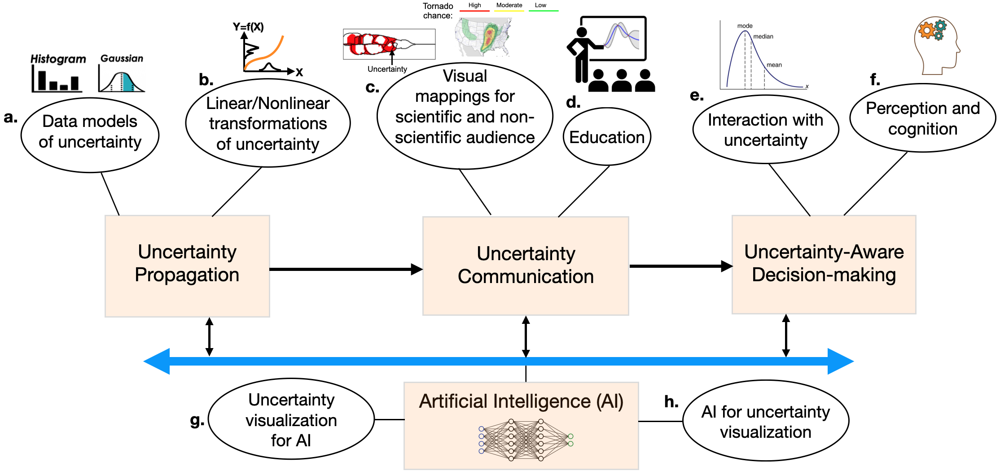

Uncertainty Visualization: Unraveling Relationships of Uncertainty, AI, and Decision-Making
Uncertainty visualization has become an increasingly important topic given the ubiquity of noise in data and computational processes. This workshop is motivated by the four uncertainty visualization challenges identified during the 2024 IEEE Workshop on Uncertainty Visualization. First, visualization community currently lacks understanding of good ways to model uncertainty and propagate it through complex scientific workflows. Second, the use of artificial intelligence (AI) is becoming pervasive across scientific domains; however, it faces a major limitation of trustworthiness of predictions due to uncertainties propagated from the data and AI models. Third, there are no standard ways to effectively communicate uncertainty with end users who can be scientific or general audience. Finally, performing decision-making under uncertainty is an open challenge, considering the role of perception, cognition, and user expertise when interpreting uncertainty. Thus, the overarching goal of this workshop is to create a roadmap to tackle the identified uncertainty visualization challenges that are multidisciplinary in nature by fostering interactions among experts from visualization, applications, AI, high-performance computing, applied math, and psychology fields.

The IEEE VIS Workshop on Uncertainty Visualization aims at being an inclusive forum for the fast dissemination of the latest results in the areas of (but not limited to) uncertainty, AI, and decision-making. The workshop welcomes submissions to cover a broad range of studies in uncertainty analysis, including novel research contributions, domain-specific or general requirements for successful uncertainty analysis, obstacles to understanding data uncertainty presented through use cases, and successful uncertainty visualization workflows for robust solutions. This workshop is the important step to enhancing theoretical and practical understanding of analysis and treatment of uncertainty across diverse domains through exciting submissions and interaction among experts within and outside the visualization field.
Previously three successful workshops have taken place on the topic of uncertainty visualization in conjunction with IEEE VIS: at Rhode Island, USA in 2011 (led by Chris R. Johnson and Alex Pang), at Chicago, USA in 2015 (led by Kristin Potter et al.), and at St Pete Beach, USA in 2024 (led by Tushar Athawale et al.). This is the fourth workshop to be held in conjunction with IEEE VIS.
To attend the Uncertainty Visualization workshop, please register through the IEEE VIS website.